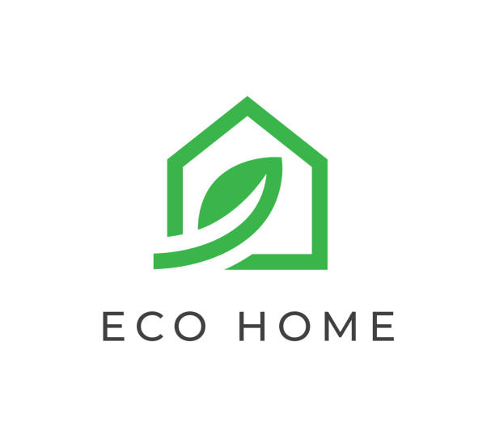
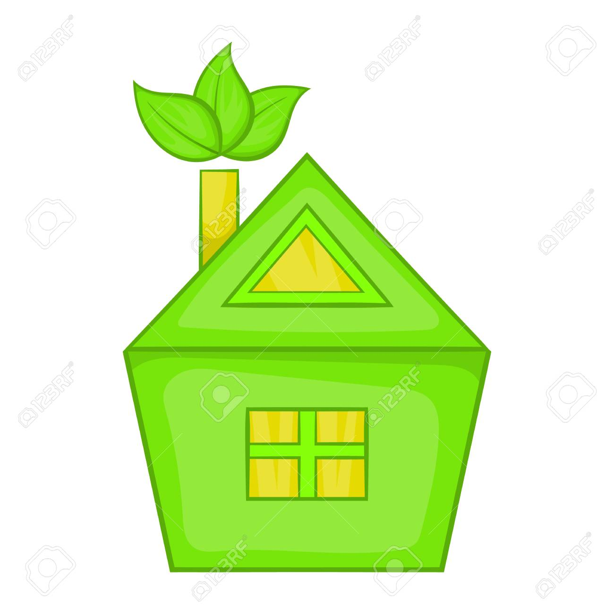
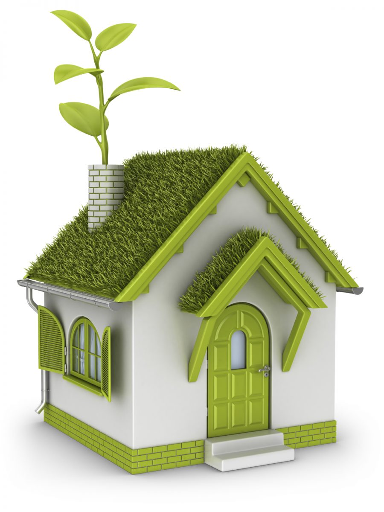

It is the one that achieves the optimal
conditions of habitability with the minimum
minimum energy consumption, taking into
taking into account the orientation of the
construction the terrain and the
nature. Below you will find information
on the subject and the process we
we did to build an ecological house.
We also implemented
pages of other subjects.
This project is important for
raise awareness that ecology
helps us to save from 3% to
90% minimizes the environmental
impact on the cost of maintenance
and contribute to health.
The materials are mostly recyclable.
The effect of overpopulation is the unequal and
disproportionate consumption of resources.
The planet has a limited capacity to generate
generation of raw materials, and every year
the deficit of natural resources, the
consumption at a faster rate than the planet can
generate them, arrives faster.
Ecological houses make the best use of
natural resources as well as possible,
because they use energy from the sun, air
and reuse water. In this way, renewable energies
such as geothermal, acrothermal
and solar photovoltaics are generated.
|  |  |  |
The disproportionate population increase
also generates social and economic
problems, as it exceeds
the carrying capacity of natural
natural resources, as well as
the competence of governments to
to provide employment
employment, housing, public services,
services health and education.
To meet the needs with these resources or to
to build other structures,
deforestation and logging
is one of the consequences of
overpopulation, which not only
affects forests or natural ecosystems,
but also affects
biodiversity and all that makes it up.
A well-planned project of ecological houses
in Tijuana as well as other communities,
benefits mainly in the cost and
expenses of maintenance and
construction. The objective of the
ecological houses is to satisfy the
needs of people living in an environmentally
in an environmentally friendly way.
In Tijuana, air pollution is excessive and
noticeable, by using greenhouse gas
by the business industry
emissions is reduced by 13%.
We have to take into account what is happening on our planet and how it is affecting us.
Not only for the impact it has had on the present, but also on the impact it will have
on future generations. In carrying out this project we had some complications,
including the organization of the team, but in the end we managed to divide the work.
We also learned that we must use renewable energies.
| PÁGINA PRINCIPAL |